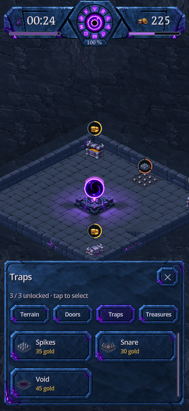

Une même pierre pour tous les menus
Captures natives du jeu : panneaux en pierre bleutée, bords sculptés et accents violets. Les textes, icônes et prix restent indépendants des textures. Le radial garde « Close » au centre.

Catalogue · 390 × 844
133 états capturés sur 7 formats. Contrôles du radial, fermeture tactile, rotation et interactions mobiles réussis. Aucun débordement détecté des libellés sans retour à la ligne. Les panneaux restent défilables sur les écrans courts. Pas de test sur téléphone physique ni d’APK.
Quatre PNG partagés : environ 351 Kio sur disque et 0,75 Mio en RGBA, hors petits pictogrammes SVG. Les sources haute résolution restent dans la documentation exclue des exports.
Maquette approuvée · Préparation et validation · Consignes ImageGen : panneau, bouton, disque.